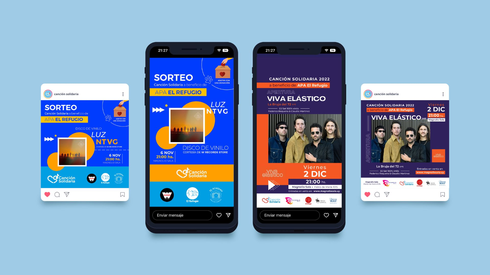
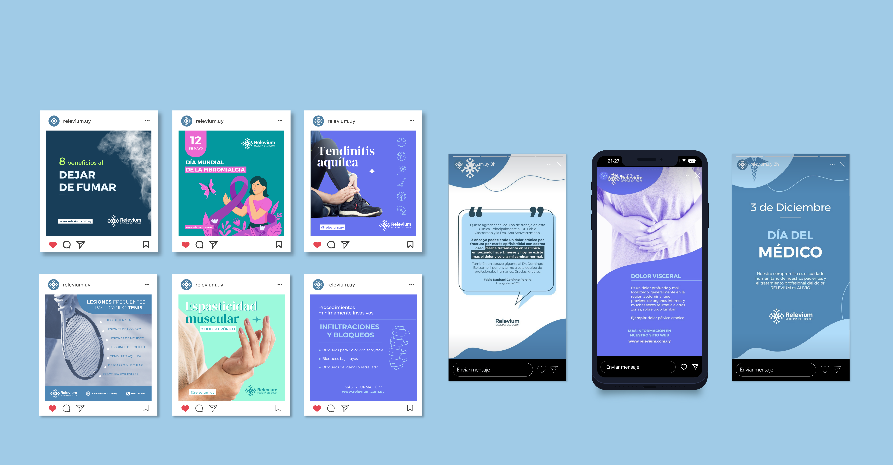

PROYECTOS
Canción Solidaria

Diseño de posts para redes sociales de una productora de conciertos solidarios en Uruguay y Argentina. Diseño de publicaciones visualmente atractivas que se alinean con la identidad y los valores de la marca.
Relevium Medicina del Dolor


Branding, sitio web, redes sociales, diseño editorial para una empresa del rubro salud que se especializa en el alivio del dolor.
- Creación de logotipo, manual de marca, paleta de colores y tipográfica e iconografía. Se tuvo en cuenta las cualidades intangibles y los principales objetivos de la empresa para desarrollar el branding.
- Desarrollo del sitio web con diseño UX-UI responsivo utilizando Sparkle.
- Creación de contenido sólido y atractivo para las redes sociales, incluyendo publicaciones, imágenes, videos y leyendas (copy).
- Diseño de autoadhesivos y folleto tríptico institucional.
Interludio


Revista de actualidad pensada para jóvenes universitarios, interesados en las nuevas tendencias, la cultura visual, la música y el entretenimiento. De gran impacto visual y variedad de temáticas, pretende atraer a un público en constante cambio y movimiento, creativo e innovador.
- El movimiento, dinamismo y colores del diseño se inspiran en el Pop Art. Toma el color y la fotografía como protagonistas, así como también la interacción del usuario con diferentes texturas (patterns).
- Busca que todos se sientan representados, por eso la sección de moda se realizó sin género, utilizando maniquíes para que el público independientemente de su género y/u orientación sexual se pueda visualizar utilizando los artículos que se muestran.
- Las fotografías utilizadas en la revista son de generación propia.
Anicca

Estrategia y diseño de redes sociales para una tienda sostenible. Contenido gráfico y videos. El diseño se basó en un brief del cliente y en un manual de marca existente con estilos predefinidos.
Dj Academy English Corner


Branding, diseño web, redes sociales, rediseño, diseño editorial, merchandising y campaña de marketing para una academia de DJs.
- Diseño diario de piezas gráficas (diplomas, flyers, roll-up banner, postales, acreditaciones), rediseño de identidad corporativa, campañas en redes sociales, merchandising.
- Producción de la campaña de marketing "Girl Power", fomentando que las mujeres elijan la profesión de DJ y promoviendo su inclusión en diferentes comunidades.
- Rediseño de la página web de la empresa, moderno y orientado al usuario.